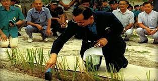

โครงการปลูกหญ้าแฝก
โครงการปลูกหญ้าแฝก ลงวันที่ 09/04/2561 เพื่อป้องกันการชะล้างพังทลายของดินและปรับปรุงสภาพแวดล้อมให้ดีขี้น เนื่องจากหญ้าแฝกเป็นพืชที่สามารถนำมาใช้ประโยชน์ได้ง่าย มีรากที่ยาว แผ่กระจายลงไปในดินตรง ๆ เป็นแผง และง่ายต่อการรักษา เมื่อวันที่ 22 มิถุนายน 2534 พระบาทสมเด็จพระเจ้าอยู่หัวทรงมีพระราชดำริเป็นครั้งแรกให้หน่วยงานต่าง ๆ ทำการศึกษา ทดลอง และดำเนินการปลูกหญ้าแฝกเพื่อเป็นการป้องกันการชะล้างพังทลายของดินและเพื่อประโยชน์อื่น ๆ หน่วยงานทั้งหลายจึงได้รับสนองพระราชดำริตั้งแต่นั้นเป็นต้นมาโดยมีสำนักงานคณะกรรมการพิเศษเพื่อประสานงานโครงการอันเนื่องมาจากพระราชดำริ (สำนักงาน กปร.) เป็นผู้ประสานงาน พระราชดำริพระบาทสมเด็จพระเจ้าอยู่หัวที่ให้หน่วยงานต่าง ๆ ดำเนินการศึกษาทดลองเกี่ยวกับหญ้าแฝกมีใจความสรุปได้ว่า 1. หญ้าแฝกเป็นพืชที่มีระบบรากลึก แผ่กระจายลงไปในดินตรง ๆ เป็นแผงเหมือนกำแพง ช่วยกรองตะกอนดินและรักษาหน้าดินได้ดี จึงควรนำมาศึกษาทดลองปลูก ให้ทดลองปลูกหญ้าแฝกเพื่อป้องกันการพังทลายของดินในพื้นที่ศูนย์ศึกษาการพัฒนาและพื้นที่อื่น ๆ ที่เหมาะสมอย่างกว้างขวาง 2. การดำเนินการทดลองการปลูกหญ้าแฝก ให้พิจารณาลักษณะของภูมิประเทศ ซึ่งแบ่งตามลักษณะของพื้นที่ดังนี้ ก. การปลูกหญ้าแฝกบนพื้นที่ภูเขา ให้ปลูกหญ้าแฝกตามแนวขวางของความลาดชันและในร่องน้ำของภูเขา เพื่อป้องกันการพังทลายของหน้าดินและช่วยเก็บความชื้นในดินไว้ด้วย ข. การปลูกหญ้าแฝกบนพื้นที่ราบ ให้ดำเนินการในลักษณะดังนี้ - ปลูกโดยรอบแปลง - ปลูกลงในแปลง แปลงละ 1 หรือ 2 แนว - สำหรับแปลงพืชไร่ ให้ปลูกตามร่องสลับกับพืชไร่ ค. การปลูกหญ้าแฝกรอบสระน้ำ เพื่อป้องกันอ่างเก็บน้ำมิให้ตื้นเขินอันเนื่องมาจากตะกอนจากการพังทลายของดิน ตลอดจนช่วยรักษาดินเหนืออ่าง และช่วยให้ป่าไม้ในบริเวณพื้นที่รับน้ำทวีความสมบูรณ์ขี้นอย่างรวดเร็ว ง. การปลูกหญ้าแฝกเหนือบริเวณแหล่งน้ำ ปลูกแฝกเป็นแนวป้องกันตะกอนดินและกรองของเสียต่าง ๆ ที่ไหลลงในแหล่งน้ำทั้งนี้ให้บันทึกภาพก่อนดำเนินการและหลังการดำเนินการไว้เป็นหลักฐาน 3. ผลของการศึกษาทดลอง ควรเก็บข้อมูลทั้งทางด้านการเจริญเติบโตของลำต้นและราก ความสามารถในการอนุรักษ์ความสมบูรณ์ของดินและการเก็บความชื้นในดินและเรื่องพันธุ์หญ้าแฝกต่าง ๆ